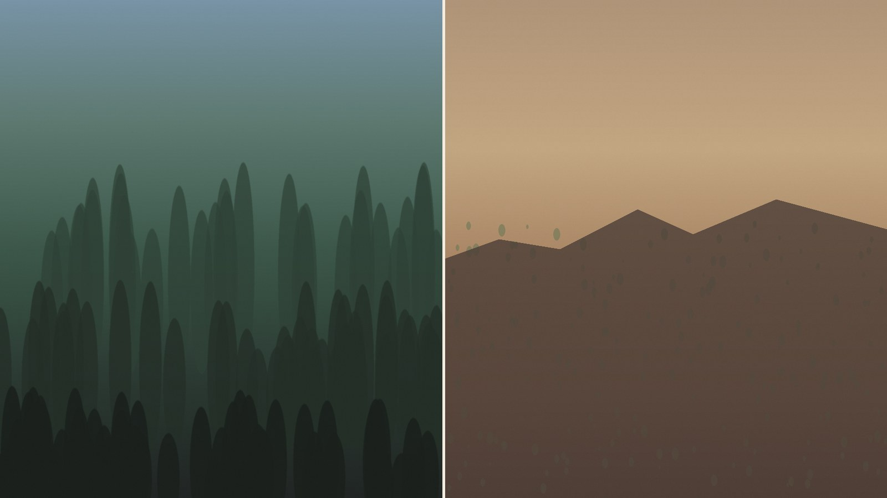
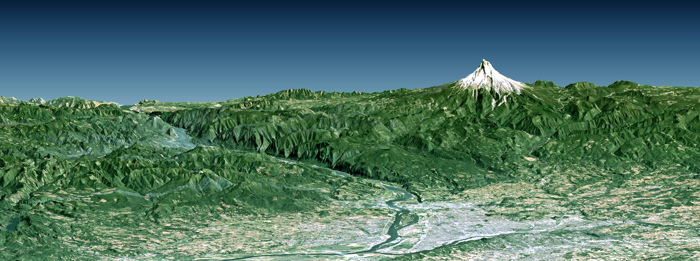
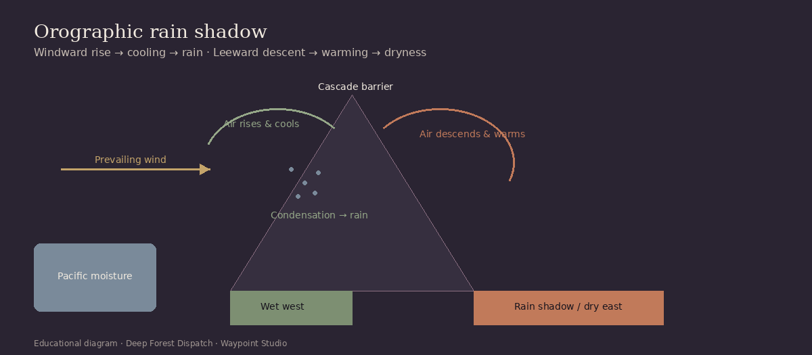
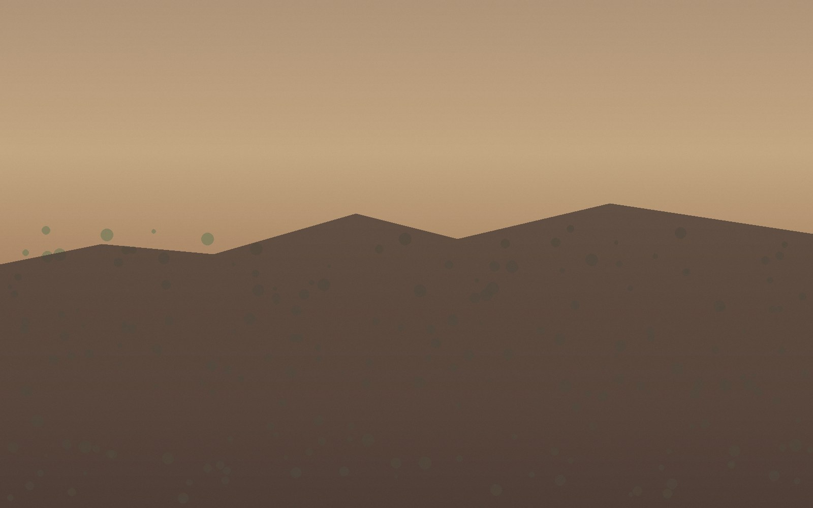
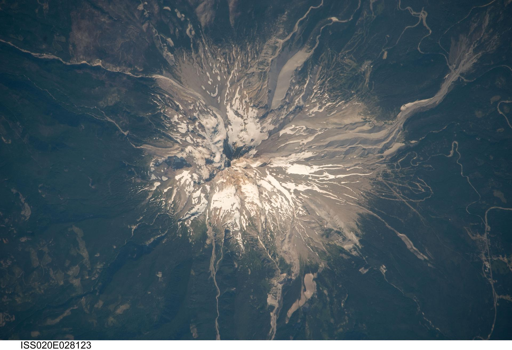

The contrast
West of the Cascades, moist Pacific air feeds temperate forests, deep moss, and frequent cloud. East of the range, the land opens into the Oregon High Desert and Columbia Plateau country — bright, dry, and often wind-scoured.
Mount Hood is one of the Cascade volcanoes that make this divide visible. The mountain does not “create” two climates by itself; it stands inside a larger barrier system. Still, from trailheads to satellite views, Hood is a memorable place to feel the difference.

Where this is happening
Follow the Cascade Range north–south through Oregon. On the west: Portland, the Willamette Valley, and forested Cascades foothills. On the east: high desert basins, sagebrush steppe, and agricultural valleys that depend on irrigation and snowmelt.

The mountain barrier
Prevailing winds in this region often carry moist air inland from the Pacific. When that air meets the Cascades, it cannot easily continue at the same altitude. The range forces the flow upward.
That forced climb is the start of the rain-shadow story. Geography becomes weather: a wall of rock rearranges where water falls.
Why air rises
Meteorologists call this orographic lifting: terrain pushes an air mass upslope. As the parcel rises, pressure drops and the air expands.
Think of it as a ramp. The Pacific delivers the moisture; the Cascades supply the ramp; physics does the rest.
Why rising air cools
Expanding air cools. Cooler air holds less water vapor. When cooling reaches the dew point, water vapor condenses into cloud droplets — and, often, precipitation.
On the windward Cascades, that process can be relentless: orographic clouds, rain, snow at elevation, and forests that live on the result.
The rain shadow
After releasing moisture on the climb, the air continues over the crest and descends on the lee side. Descending air compresses and warms. Warmer air can hold more moisture relative to what remains — so clouds thin and rainfall drops.
That leeward dryness is the rain shadow. East of the Cascades, the high desert is not an accident of aesthetics. It is the other half of the same atmospheric transaction that greens the west.


See it from above
From orbit, Cascade volcanoes puncture cloud decks and snowfields. Valleys west of the crest often look softer and greener; basins to the east read as more open and arid. The pattern is regional — Mount Hood is one vivid chapter in a longer Cascade story.

Explore further
If this contrast made you want to read conditions before a trip west of the Cascades — or plan a photograph in shifting mountain light — Waypoint’s outdoor tools are built for that next step.